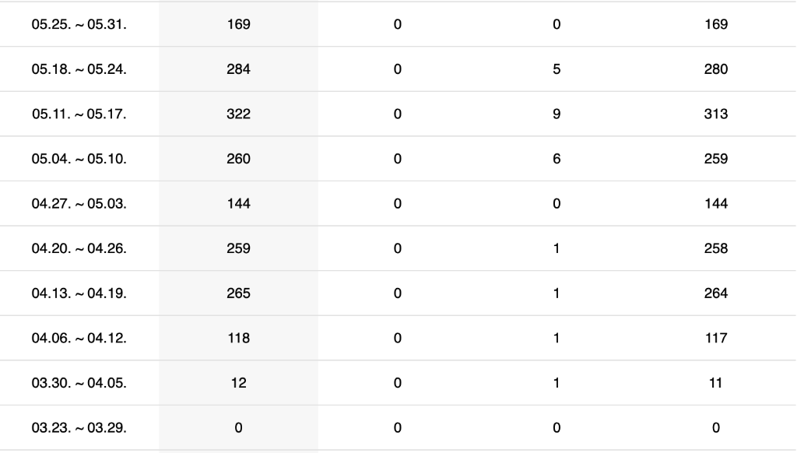

Read
네이버 블로그 운영 기록입니다. My Naver Blog growth & operation record.
📅
개설 시기
Started Since
2026년 3월
March 2026
📈
최고 주간 방문자
Peak Weekly Visitors
322명
322
⏱
성장 기간
Growth Period
10주
10 Weeks
방문자 통계 Visitor Statistics

3월 개설 후 10주 만에 주간 방문자 0 → 322명 달성
Grew weekly visitors from 0 to 322 in just 10 weeks since launching in March